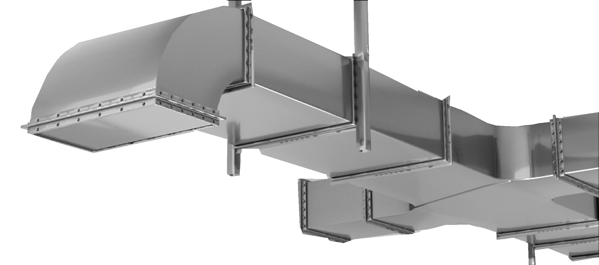

Windows duct component builder
AAVDS-duct-builder
Build, validate and export coordinated duct components as STEP files from one project workspace.
Checking published versions...
01
One controlled workflow
- DefineEnter component dimensions, catalogue options and connections.
- BuildGenerate geometry through the bundled FreeCAD runtime.
- VerifyAccept validated STEP output and retain traceable project data.
02
Distribution
- Platform
- Windows 10 or 11, 64-bit
- CAD runtime
- FreeCAD is included with the installer
- Developer tools
- Python and Visual Studio are not required